＋0.5秒，大概是两秒钟不到．当然了，桌面上只有7个分类，有点浪费了，那你还可以把最常用的几个图标单独放置桌面，这样速度就更快了．
＋0.5秒，大概是两秒钟不到．当然了，桌面上只有7个分类，有点浪费了，那你还可以把最常用的几个图标单独放置桌面，这样速度就更快了．在前文中，我们以定价问题为例，讨论了二次式的极值问题．我们发现，对于一个标准的二次式a x 2 ＋b x ＋c 而言，当
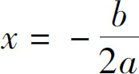
的时候，会取的一个最大值或者最小值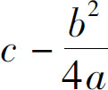
．如果a ＞0，这个数值就是它的最小值；如果a ＜0，这就是它的最大值．当遇到具体问题时，我们只需要找到a、 b 、c 对应的数值，然后按照极值公式把数值代入，就可以求得具体数值了．现在，我们就来看一看，这个极值在实际生活中的应用，我们要分析的第一个问题是：学习应该熬夜吗？我们可以假设自己每天需要8个小时睡眠，如果你把用于睡觉里的x 小时挤出来学习，那么每天就会多学x 点的知识．但是由于你睡觉少了，精神不够，第二天就会在课堂上犯困，导致你少学一点东西．我们假设每天正常的学习时间是10个小时，由于我们挤占了x 小时，因此第二天学习时间就是10＋x ；但问题在于挤占了睡觉时间后就不可能精力充沛，熬夜以后，你的睡眠时间变成了8－x 个小时，我们用8－x 除以正常睡觉的时间8小时，得到的就是自己的睡眠质量．
我们假设第二天的学习质量等于你的睡眠质量，那么你第二天学习的总体效果就是学习时间乘以学习效率，也就是（10＋x ）
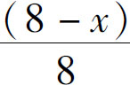
，展开并整理为标准的二次式得到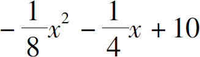
．在这个代数表达式中，x 2 的系数
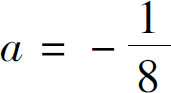
，x 的系数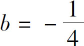
，常数项c ＝10．因为a 小于0，所以这个代数式是有最大值的，什么时候最大呢？当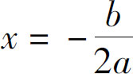
的时候，把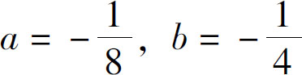
代入该式，得到x ＝－1．当x ＝－1的时候最为有利．这就意味着：对于每天学习10个小时的学生而言，不需要再去挤占可怜的睡眠时间了．平常我们总说身体很重要，睡眠很重要，不能保障休息就不能保障第二天的学习，因此熬夜是有害无益的．现在，我们总算通过数学方式证明了，事实的确如此！当然，在这个模型中，我们还只是考虑了第二天的学习效果，并没有考虑睡眠不足对身体的影响．如果考虑健康因素，我就更不建议你熬夜了．接下来我们再看第二个问题，开车的速度问题．
关于汽车的油耗问题，基本情况是这样的：我们把汽车启动起来以后，即使停在原地不动，也会固定地消耗一些汽油；如果你行驶起来，随着速度越来越快，耗油量也就会越来越多．油耗的增加主要有两方面原因，一是因为车在路面行驶的时候受到地面的摩擦阻力，会消耗一部分能量；二是因为车开快了以后空气的阻力变大，也会消耗一部分能量．
我们假设，车的百千米耗油量y 跟速度x 之间符合这样的关系：
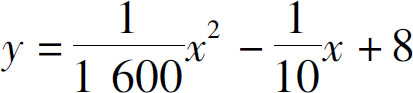
．那么，车开多快的时候百千米耗油量最低，它的最低耗油量又能达到多少呢？由于耗油量的表达式属于二次式，因此我们可以直接套用二次式的极值公式．在原式中：x 2 的系数
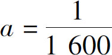
，x 的系数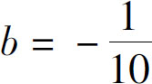
，常数c ＝8．根据极值条件我们知道，因为a 的系数是正的，所以当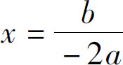
的时候，可以取得最小值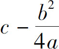
，我们把具体数字代入两个表达式中：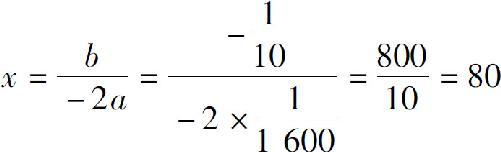
，即速度为80千米／时最省油，油量为：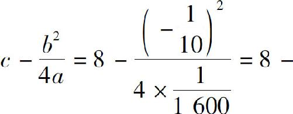
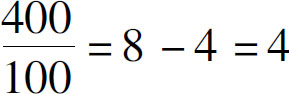
．通过上述计算可知，当车速80千米时，百千米最低耗油量是4升．当然了，这两个速度只是理论计算，并不适合所有的车型．当遇到具体问题时仍需具体分析．我们在这里呢，只是让大家体验一下极值的应用．接下来，再看一个玩手机的问题：
假设你的手机上有100个图标，那么把这些图标分成几个分类最合适呢？我们假设每一屏能放20个图标，那么100个图标就能放5屏．一般来说，一个人看清一个App的时间是0.1秒，移动翻屏的时间是0.5秒，那么在没有分类的条件下，平均打开一个App的时间是多少呢？因为我们不确定要打开哪个App，我们可以以中间的App为准，打开它的时间就等于从第一个图标看到中间的一个，这其中我们要看50个图标，要做两次翻屏操作．平均时间就是50×0.1＋0.5×2，50×0.1＝5，0.5×2＝1，一共是6秒．那么，如果我们在桌面上添加了x 个分类呢？
首先，我们需要找到对应的分类，打开这个分类后才能找到自己所需的图标．我们假设看清一个分类的时间是0.2秒，如果我们按中间的一个分类算平均时间，那么找到分类的平均时间就是
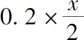
秒．找到分类以后，打开这个分类需要0.5秒，最后再从这个分类下去找自己所需的图标，它的图标平均有多少个呢？因为一共有100个图标，而我们又做了x 个分类，所以每个分类下就有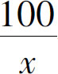
个，然后在 个图标中找到所需图标需要的平均时间又是多少呢？同样需要按中间的图标来算，因为看清一个图标需要0.1秒，所以在分类下找到所需图标的时间共需要
个图标中找到所需图标需要的平均时间又是多少呢？同样需要按中间的图标来算，因为看清一个图标需要0.1秒，所以在分类下找到所需图标的时间共需要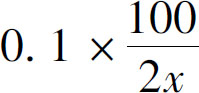
秒，最后把这些时间加起来就得到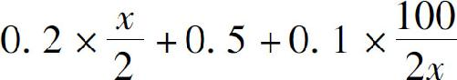
，我们把算式化简一下，得到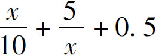
，但这个算式是一个分式方程，并不是二次式，不能套用极值公式，那怎么办呢？回到问题的原点，我们仍然采用配方法来解决它，因为x 肯定是大于0的，于是我们就可以给它强制的配方了．我们可以认为
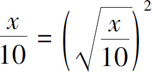
，并且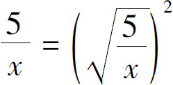
，这样一来，原式就可以化为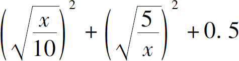
．为什么我们要这么处理呢？因为我想把它配成一个完全平方公式，如果我在a 2 ＋b 2 中间增加一个－2a b ，就可以把它强制配成了（a －b ）2 ，按此规律，可以把原式转换为
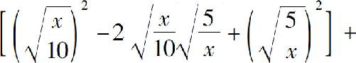
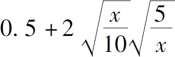
，化简，得到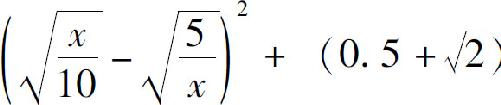
．现在，整个这个算式就变成了一个算式的平方加上一个常数了，那么什么时候它的值最小呢？显然，当平方的结果等于0的时候结果最小，算式等于0，就意味着
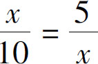
，等式两边乘以10x ，得到x 2 ＝50，由于x ＞0，所以可知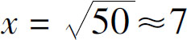
．也就是说，如果你有100个App，把桌面上的图标分7个分类效率最高．那么这时候，我们找一个App的平均时间是多少呢？等于
＋0.5秒，大概是两秒钟不到．当然了，桌面上只有7个分类，有点浪费了，那你还可以把最常用的几个图标单独放置桌面，这样速度就更快了．
在分析了这三个实际应用以后，你有什么感受？如果你能够因此感受到数学的魅力，我会感到非常欣慰．但一定也有人会有这样的想法：生活一定要这样刻板吗？难道连手机图标的分类也值得用方程式算一算吗？我们费这么大劲，结果不就是7个分类最方便吗？为什么不可以直接告诉我这个答案呢？如果你要这么理解，我首先要严肃地告诉你，其实上面的结论，全部都是错的，因为我们是在一系列假设的前提下推出的这个结论，在实际应用中，如果这些假设条件变了，结果也就变了．
此外，我认为数学的奇妙之处并不在于找到答案的那一刻，而在于不断思索的过程中．在我们生活的世界上，从来就有这么两类人，有些人钓鱼是为了吃饱，他们的目的在鱼；而另一些人钓鱼则是为了消遣，他们的目的在于山水之乐．那么，你学习数学的目的又是什么呢？是用数学解决实际问题，还是通过问题来感受数学的快乐呢？我们在数学中之所以能够感受到快乐，是源于数学之美．